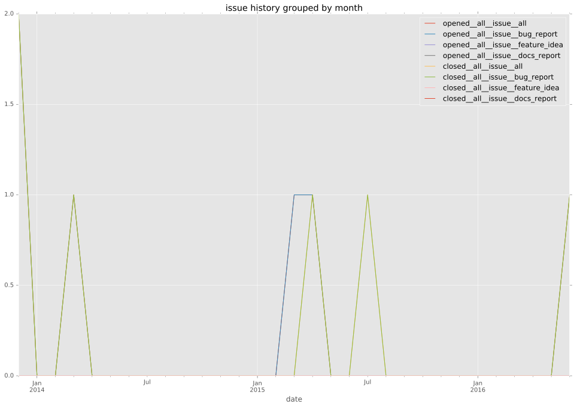
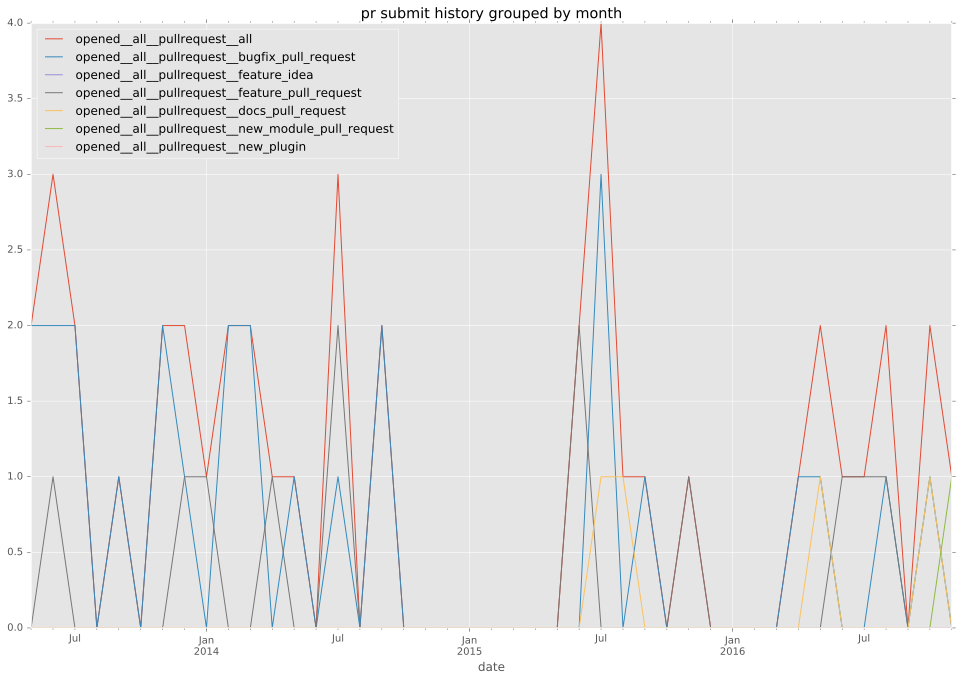
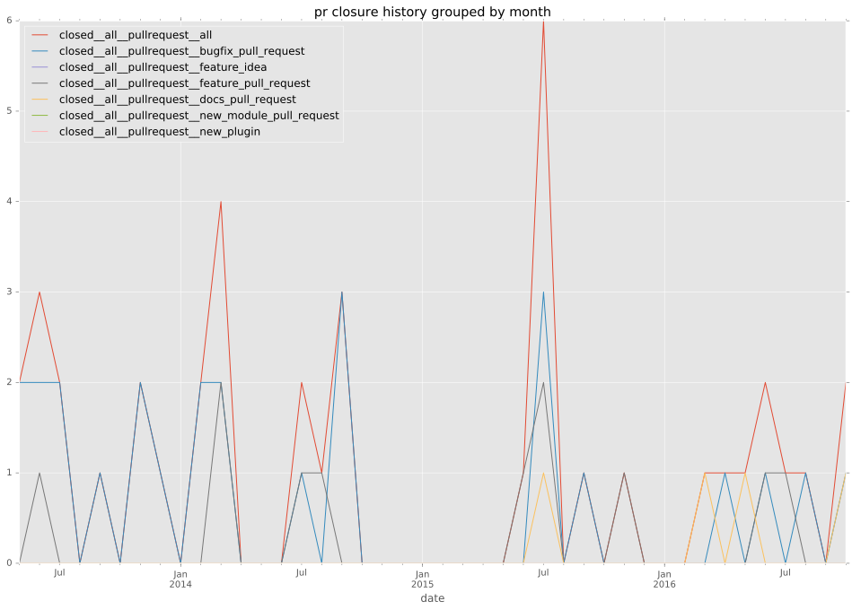
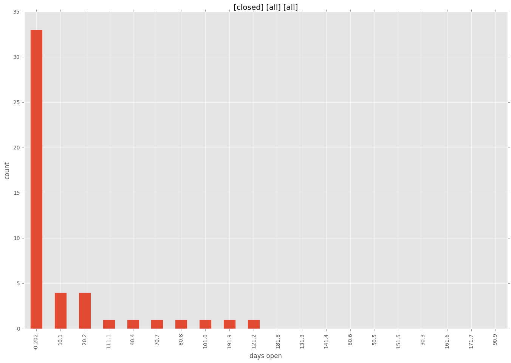

authors
- jpmens
- sivel
maintainers
- jpmens
- sivel
contributors
- jpmens : 28 commits
- sivel : 22 commits
- amuraru : 13 commits
- ahamilton55 : 6 commits
- resmo : 5 commits
- mscherer : 4 commits
- mpdehaan : 4 commits
- phenomenes : 3 commits
- hyperized : 3 commits
- drawks : 3 commits
- abadger : 3 commits
- rawtaz : 2 commits
- nirvinehh : 2 commits
- kevinmontuori : 2 commits
- jctanner : 2 commits
- hellerbarde : 1 commits
- bcoca : 1 commits
total issue counts
feature pull request: 8
pullrequest: 38
docs pull request: 3
bugfix pull request: 27
feature idea: 3
issue: 11
bug report: 8
issue history

pullrequest history


days open by issue type
bugfix pull request
count: 43
std: 20.1303339093
min: 0
max: 129
median: 0.0
mean: 5.76744186047
all
count: 74
std: 35.6369372915
min: 0
max: 202
median: 0.0
mean: 15.8513513514
pullrequest
count: 0
std: nan
min: nan
max: nan
median: nan
mean: nan
docs pull request
count: 5
std: 89.4650769854
min: 0
max: 202
median: 4.0
mean: 42.0
feature pull request
count: 15
std: 29.4168723856
min: 0
max: 82
median: 23.0
mean: 23.7333333333
feature idea
count: 3
std: 29.8663690461
min: 20
max: 76
median: 30.0
mean: 42.0
issue
count: 0
std: nan
min: nan
max: nan
median: nan
mean: nan
bug report
count: 8
std: 50.1296533287
min: 0
max: 114
median: 0.5
mean: 29.125
closures grouped by total days open
